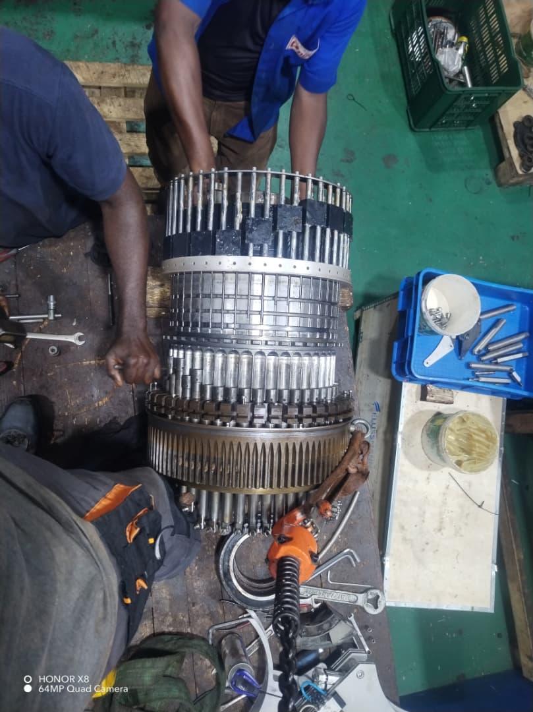
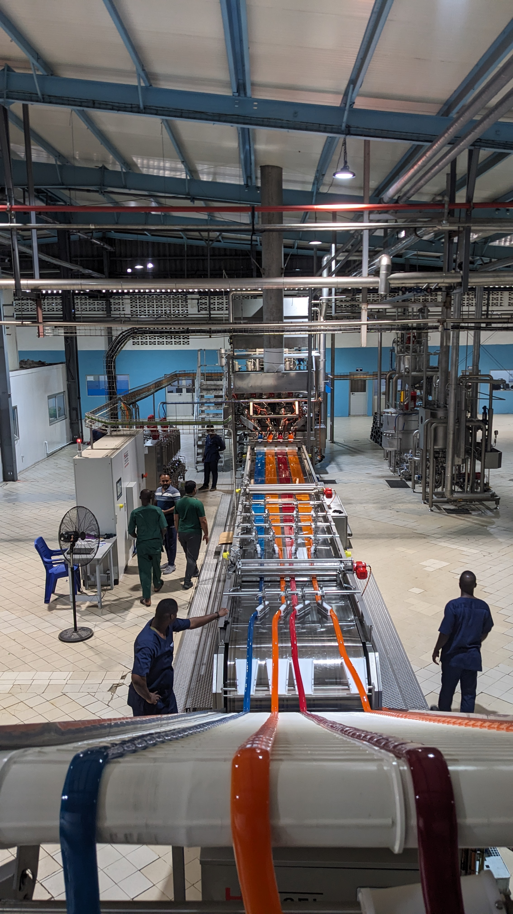

// GALERIE
Photos & vidéos de mes projets




×

Technicien Maintenance Industrielle — Master 1 Génie Mécanique & Productique
Spécialisé en maintenance des systèmes mécaniques : diagnostic de pannes, machines d'injection-soufflage, machines-outils et conception assistée par ordinateur. Rigoureux, curieux, et formé sur le terrain dans l'industrie agroalimentaire et cosmétique au Togo.
Le résumé de mon parcours, en deux mots : terrain, rigueur, apprentissage continu.
Je suis TA Bi Goua Ange Emmanuel, titulaire d'une Licence Professionnelle en Génie Mécanique et Productique (ESIG Global Success), option Maintenance des Systèmes Mécaniques, et actuellement en Master 1 Génie Mécanique et Productique.
Passionné par la maintenance industrielle, j'ai développé mes compétences en diagnostic et réparation à travers des stages et expériences professionnelles concrètes dans l'agroalimentaire et la plasturgie. Rigoureux et motivé, je souhaite mettre ce savoir-faire au service de vos projets techniques.
Lignes de production, convoyeurs, broyeurs, machines d'injection-soufflage.
SolidWorks, Proteus, SchemaPlic — de l'idée à la pièce fabriquée.
Création d'un logiciel de gestion de la maintenance (SQL Server, C#).
Les outils, machines et logiciels avec lesquels je travaille au quotidien.
Bonne connaissance des machines de soufflage et d'injection plastique.
Tour, perceuse à colonne — lecture de plans et respect des tolérances.
Bonne connaissance des machines d'impression 3D, du fichier à la pièce.
SQL Server, Visual Studio, C# — création d'un logiciel GMAO (mémoire de licence).
SolidWorks, Proteus et SchemaPlic pour la conception et les schémas techniques.
Word, Excel, PowerPoint — rédaction technique et suivi de projet.
Stages, contrats et projets — du plus récent au plus ancien.
UNIFOOD TOGO · Lomé
DODO COSMETICS TOGO · Lomé
UNIFOOD TOGO · Lomé
ESIG Global Success · Lomé Bè-kpota
Atelier de tournage · Lomé-Djidjolé
Diplômes et certifications obtenus à ce jour.
Université ESIG Global Success, Lomé-Togo
Université ESIG Global Success, Lomé-Togo · Option Maintenance des Systèmes Mécaniques
Lycée d'Enseignement Technique et Professionnel de Lomé, Lomé-Togo
Application de gestion de la maintenance assistée par ordinateur, développée en C# et SQL Server dans le cadre du mémoire de licence.
Modélisation 3D sur SolidWorks réalisée lors du projet de conception et fabrication mené à ESIG Global Success.
Retrouve l'ensemble de mes dépôts et projets en cours sur GitHub.
Visiter mon profil GitHub// GALERIE


// RÉFÉRENCES
M. Amza
Responsable technique — Unifood Togo
+228 91 69 11 78
M. Yovo
Technicien — Dodo Cosmetics
+228 98 44 17 40
Dr. Gogoli
Responsable filière Génie Mécanique — ESIG Global Success
+228 98 92 62 62
Coordonnées partagées avec l'accord de chaque référent. Si tu préfères ne pas afficher ces numéros publiquement, remplace-les par la mention « disponible sur demande ».
// CONTACT
Disponible pour un poste, un stage ou une mission de maintenance industrielle.
RÉSEAUX // À CONNECTER